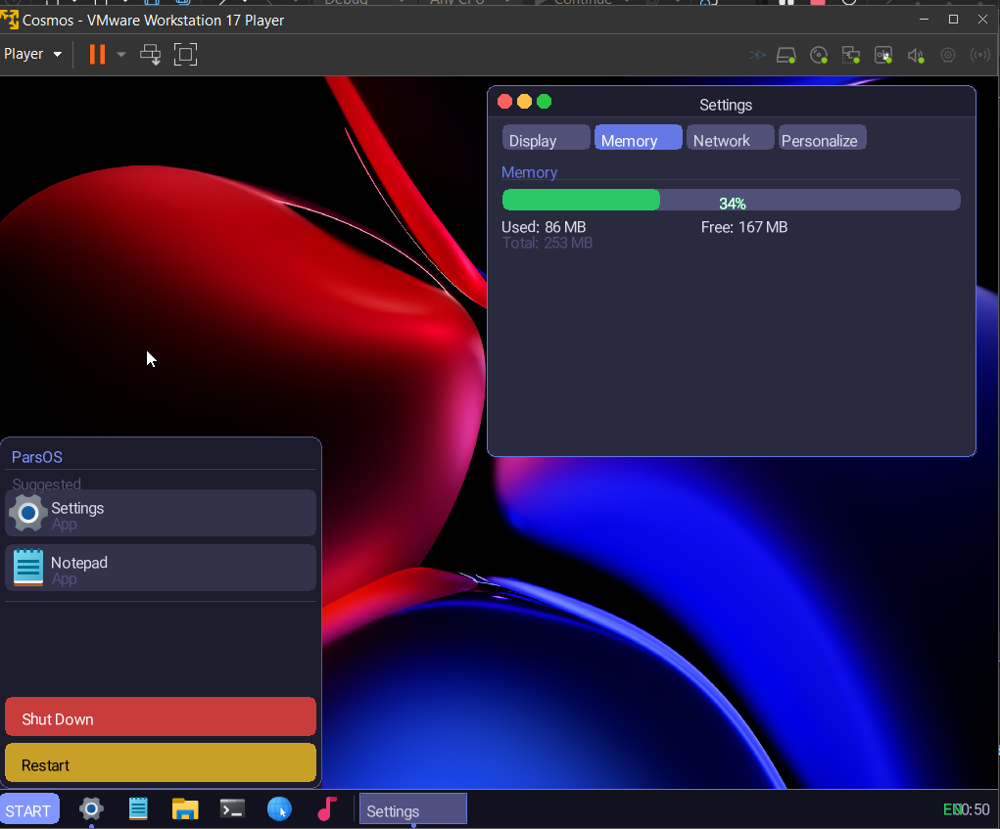

یک سیستمعامل گرافیکی که بهطور کامل با Cosmos و #C ساخته شده و مستقیم روی سختافزار اجرا میشود.

هر بخش، تکهای دستساز از یک سیستمعامل واقعی روی سختافزار خام است.
آخرین اسکرینشاتهای ParsOS Desk را در ریدمی مخزن گیتهاب ببینید.